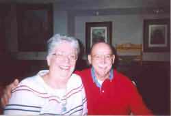

|
 Better paying jobs have included: Cotton picker, hay baler, newspaper carrier, U.S. Marine Corps sergeant with one year in combat, short order cook, hypnotist, journeyman printer, writer, businessman, and college instructor. After the Korean War, he attended Southwest School of Printing in Dallas to complete a trade started at Hot Springs High School. Later, he went to Henderson State University and majored in what he laughingly now calls: “the meaning of life.” A double major in English and psychology confused him even more. Graduate courses at The American University, Washington, D.C., and HSU helped even less, but he did develop an interest in philosophy, Eastern religions and yoga, as well as, Transcendental Meditation. He studied Dianetics before it became the world-wide religion: Scientology. White worked as a printer and composing room supervisor for The Washington Post for 22 years. He has had articles published in The Post and many other newspapers across the country. White has just finished his fourth self-published book, “Born Again! (Once Was More Than Enough!) As a United States Marine!” Currently, he writes a humor column for his hometown newspaper, the Hot Springs Sentinel-Record, and a weekly column for The Standard that covers Clark and Pike counties. Most of his poetry deals with war, religion, enlightenment and “the meaning of life.” What ever that means.
|
{kind=link}